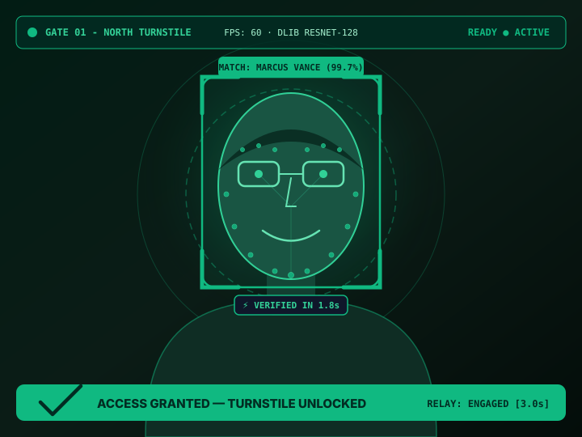

Gate Kiosk Terminal UI
GATE #1 NORTHHigh-speed facial verification kiosk display mounted on the physical turnstile
4K 60FPS CAMERA FEED
OpenCV + Face_Recognition (128-d)

TURNSTILE #1 READY
RESNET-128: 142ms
CACHE HIT: 0.02ms
MATCH: 99.7%
Verification Speed
1.78s
⚡ REAL-TIME BENCHMARK
MV
Dr. Marcus Vance
STAFFPrincipal Security Architect
Cyber Security Operations · Level 4 All Access
Check-In Timestamp
08:42:19 AM
● SYNCHRONIZED WITH MOBILE APP
Quick Test Personas:
Mobile Admin App Companion
Android APK for live attendance & gate telemetry
9:41
5G
100% 🔋
RT
Turnstile Mobile
● GATE #1 SYNCED
Present
184/210
Absent
18
Late
8
Recent Check-Ins
Real-Time